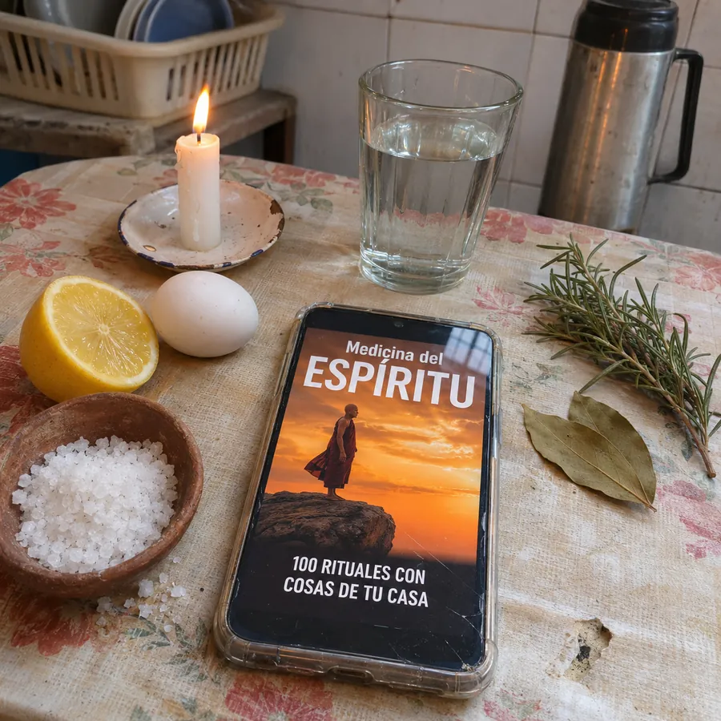
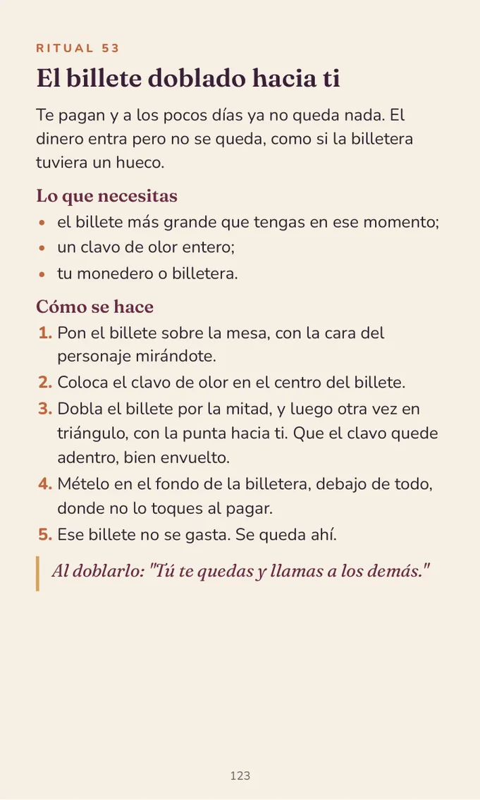
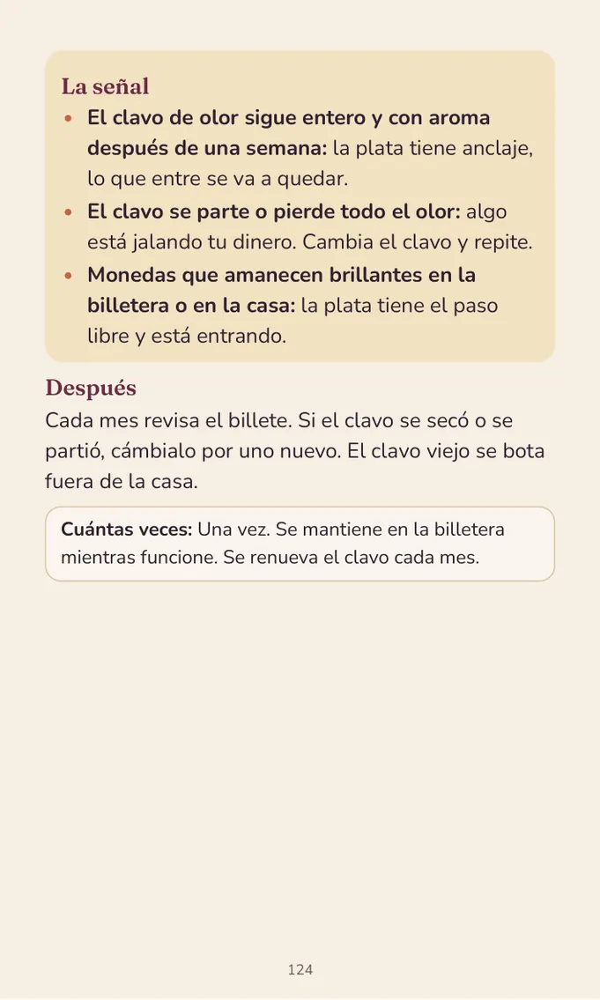
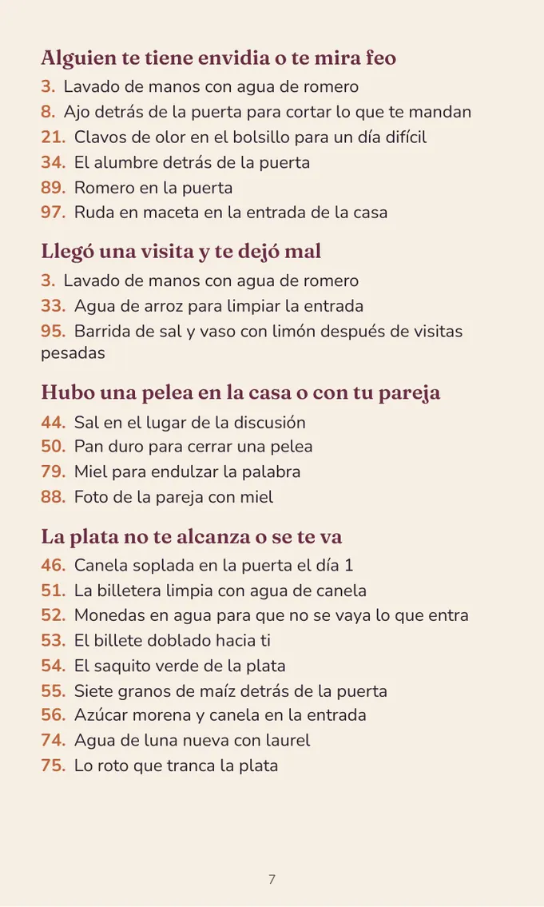
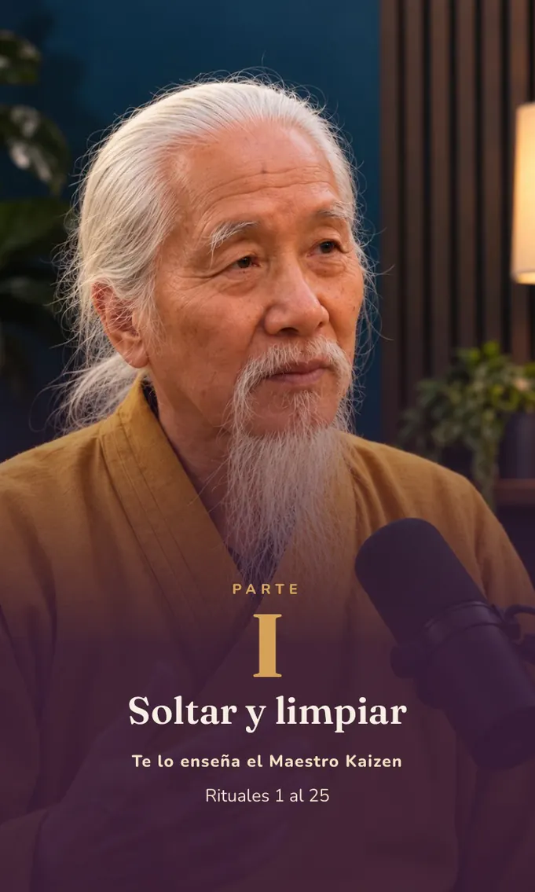

100 rituales del Maestro Kaizen, el Monje Yun y el Monje Shen, con sal, huevo, limón, vela y lo que ya tienes en la cocina. Cada uno con su señal para saber si funcionó.

7 USD · un solo pago
Al pagar ves el precio en la moneda de tu país.
Comprar por 7 USD →Si llegaste aquí desde uno de nuestros videos, ya nos conoces.
Al Maestro Kaizen le toca la puerta de tu casa: la envidia, la visita que te deja todo pesado, la mala racha. El Monje Shen cuida tu descanso y la paz de tu mesa. El Monje Yun habla de plata: la que entra y se va, la deuda que no baja, el negocio que no vende.
En este libro cada uno te deja 25 rituales, y los otros 25 los escribimos juntos. Cada ritual trae lo que necesitas, cómo se hace y la señal que te dice si funcionó.
Busca lo que te pasa en el índice y empieza hoy.
— Maestro Kaizen, Monje Yun y Monje Shen
Para cada una de estas cosas hay un ritual en el libro, con lo que tienes en tu cocina.
Quiero mi libro →100 rituales en cuatro partes. Cada Monje te enseña lo suyo.
La envidia, la visita pesada y la mala racha.
Barrido con sal y ruda · Ajo detrás de la puerta · El cuenco de sal en la entrada
La plata que se va, las deudas, el trabajo y el negocio.
El billete doblado hacia ti · La vela verde para la deuda · Albahaca en la caja del dinero
Dormir de corrido y tener paz en la mesa.
Limón con clavos junto a la cama · Sal debajo del colchón · Huevo pasado por el cuerpo
Para que la casa se quede limpia y en calma cuando ya limpiaste.
Son páginas reales, con letra grande. La primera es un ritual completo: lo puedes hacer hoy mismo.
👉 Pasa las páginas con tu dedo, de derecha a izquierda




100 rituales para leer en tu celular, con letra grande.
No tienes que leer todo. Al principio hay una lista de 17 problemas (la plata, la envidia, el sueño, las peleas). Tocas el tuyo con el dedo y el libro te lleva solito al ritual.
Para que no te quedes con la duda: qué significa cuando el agua del huevo sale con burbujas, cuando la sal se pone oscura o la vela llora.
Si no sabes por cuál empezar, te decimos qué ritual hacer cada día, de lunes a domingo.
Los que nos viste en Facebook y no alcanzaste a anotar, escritos paso a paso y con su señal.
Pagas una sola vez y el libro es tuyo. No hay cobros mensuales.
Comprar por 7 USD →Pagas en tu moneda y como tú quieras:
Con tarjeta de débito o crédito, con PayPal o en efectivo, según los medios de tu país. Al pagar ves el precio exacto en tu moneda.
Lee el libro y haz tus primeros rituales. Si sientes que no es para ti, pides tu devolución dentro de los 7 días y te regresan el 100 % de lo que pagaste, sin preguntas.
Apenas pagas, te llega un correo de Hotmart con el botón para abrir tu libro. Lo descargas y queda guardado en tu celular para leerlo cuando quieras. Si no ves el correo, búscalo en «Correo no deseado». Si pagas en efectivo, te llega apenas se confirma tu pago.
Es la plataforma que cobra y te entrega el libro. Es de Brasil y la usan miles de autores de libros y cursos en toda Latinoamérica. Tus datos de pago quedan con ellos, no con nosotros, y desde ahí pides tu devolución si la necesitas.
Casi todo está en tu cocina: sal, limón, huevo, canela, ajo, romero, laurel y un vaso de agua. Lo demás (alumbre, ruda, una vela) lo consigues en el mercado por poco.
Sí, está hecho pensando en ti. Tiene letra grande. Al principio hay una lista de problemas: tocas el tuyo con el dedo (por ejemplo «La plata no te alcanza») y el libro te lleva solito al ritual. Si te trabas, nos escribes y te ayudamos.
No. Son rituales con cosas de tu casa y no te piden cambiar lo que crees. Si rezas, puedes sumar tu oración al ritual.
Sí. Al tocar el botón, Hotmart te muestra el precio en tu moneda y las formas de pago de tu país.
Tienes 7 días de garantía. Pides el reembolso desde Hotmart y te devuelven todo lo que pagaste.
Hoy en tu cocina ya tienes sal, un limón o un billete para tu primer ritual. Lo haces antes de dormir y mañana miras la señal.
Comprar por 7 USD →Un solo pago · En tu moneda · 7 días de garantía